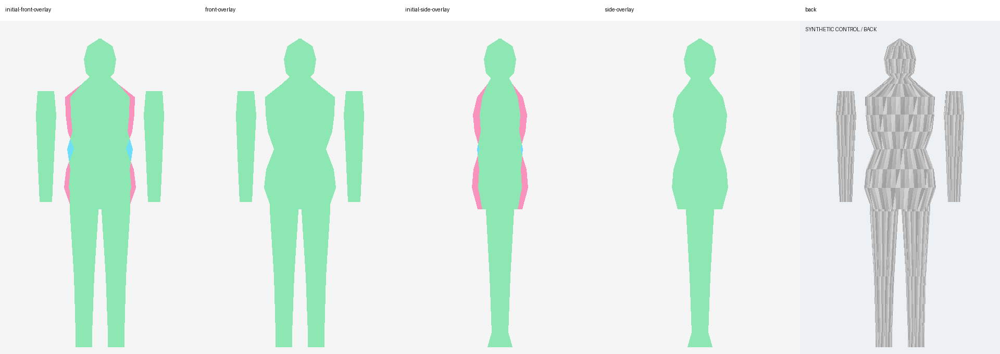
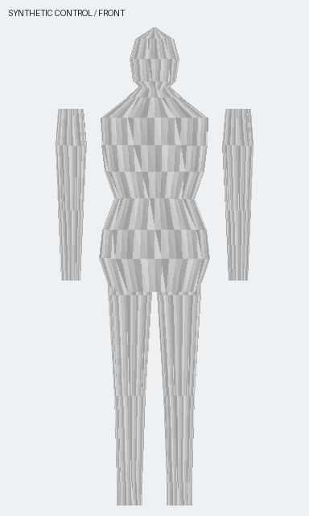
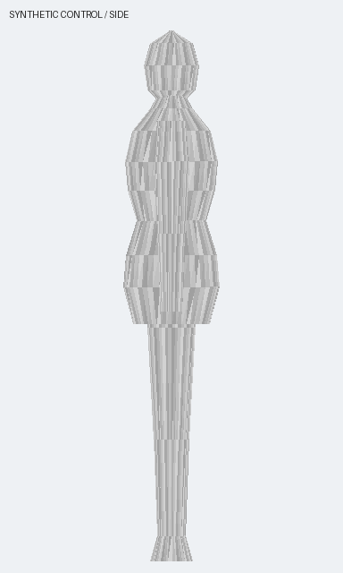
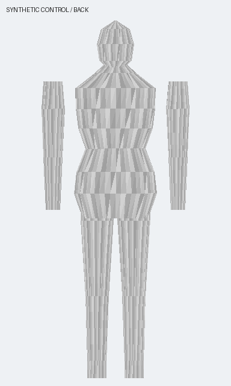

170 cm height prior; frozen orthographic camera. Two synthetic target masks only. No anatomical accuracy claim.
| View | Initial IoU | Final IoU |
|---|---|---|
| Front | 0.952754 | 1.000000 |
| Side | 0.888754 | 1.000000 |
Overlays: green overlap; pink target-only; cyan mesh-only. Back is an unobserved synthetic projection.




Actual OBJ · Fitted controls · Metrics · Evidence and uncertainty report · Independent validation · Reproduce